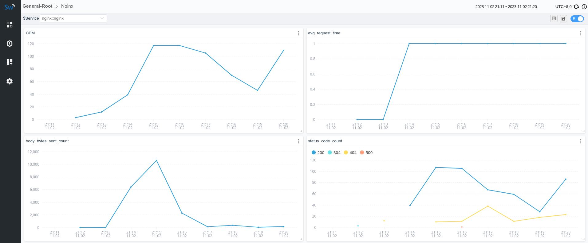

使用 LAL 收集并分析 Nginx access log
背景介绍
Nginx access log 中包含了丰富的信息，例如：日志时间、状态码、响应时间、body 大小等。通过收集并分析 access log，我们可以实现对 Nginx 中接口状态的监控。
在本案例中，将由 fluent-bit 收集 access log，并通过 HTTP 将日志信息发送给 SkyWalking OAP Server 进行进一步的分析。
环境准备
实验需要的 Nginx 及 Fluent-bit 相关配置文件都被上传到了Github，有需要的读者可以自行 git clone 并通过 docker compose 启动，本文中将介绍配置文件中几个关键点。
Nginx日志格式配置
LAL 目前支持 JSON、YAML 及 REGEX 日志解析，为了方便获取到日志中的指标字段，我们将 Nginx 的日志格式定义为 JSON.
http {
...
...
log_format main '{"remote_addr": "$remote_addr",'
'"remote_user": "$remote_user",'
'"request": "$request",'
'"time": "$time_iso8601",'
'"status": "$status",'
'"request_time":"$request_time",'
'"body_bytes_sent": "$body_bytes_sent",'
'"http_referer": "$http_referer",'
'"http_user_agent": "$http_user_agent",'
'"http_x_forwarded_for": "$http_x_forwarded_for"}';
access_log /var/log/nginx/access.log main;
...
...
}
Fluent bit Filter
我们通过 Fluent bit 的 lua filter 进行日志格式的改写，将其调整为 SkyWalking 所需要的格式，record的各个字段含义如下：
- body：日志内容体
- service：服务名称
- serviceInstance：实例名称
function rewrite_body(tag, timestamp, record)
local newRecord = {}
newRecord["body"] = { json = { json = record.log } }
newRecord["service"] = "nginx::nginx"
newRecord["serviceInstance"] = "localhost"
return 1, timestamp, newRecord
end
OAP 日志分析
LAL定义
在 filter 中，我们通过条件判断，只处理 service=nginx::nginx 的服务，其他服务依旧走默认逻辑：
第一步，使用 json 指令对日志进行解析，解析的结果会被存放到 parsed 字段中，通过 parsed 字段我们可以获取 json 日志中的字段信息。
第二步，使用 timestamp 指令解析 parsed.time 并将其赋值给日志的 timestamp 字段，这里的 time 就是access log json 中的 time。
第三步，使用 tag 指令给日志打上对应的标签，标签的值依然可以通过 parsed 字段获取。
第四步，使用 metrics 指令从日志中提取出指标信息，我们共提取了四个指标：
nginx_log_count：Nginx 每次请求都会生成一条 access log，该指标可以帮助我们统计 Nginx 当前的请求数。nginx_request_time：access log 中会记录请求时间，该指标可以帮助我们统计上游接口的响应时长。nginx_body_bytes_sent：body 大小指标可以帮助我们了解网关上的流量情况。nginx_status_code：状态码指标可以实现对状态码的监控，如果出现异常上涨可以结合 alarm 进行告警。
rules:
- name: default
layer: GENERAL
dsl: |
filter {
if (log.service == "nginx::nginx") {
json {
abortOnFailure true
}
extractor {
timestamp parsed.time as String, "yyyy-MM-dd'T'HH:mm:ssXXX"
tag status: parsed.status
tag remote_addr: parsed.remote_addr
metrics {
timestamp log.timestamp as Long
labels service: log.service, instance: log.serviceInstance
name "nginx_log_count"
value 1
}
metrics {
timestamp log.timestamp as Long
labels service: log.service, instance: log.serviceInstance
name "nginx_request_time"
value parsed.request_time as Double
}
metrics {
timestamp log.timestamp as Long
labels service: log.service, instance: log.serviceInstance
name "nginx_body_bytes_sent"
value parsed.body_bytes_sent as Long
}
metrics {
timestamp log.timestamp as Long
labels service: log.service, instance: log.serviceInstance, status: parsed.status
name "nginx_status_code"
value 1
}
}
}
sink {
}
}
经过 LAL 处理后，我们已经可以在日志面板看到日志信息了，接下来我们将对 LAL 中提取的指标进行进一步分析：

MAL定义
在 MAL 中，我们可以对上一步 LAL 中提取的指标进行进一步的分析聚合，下面的例子里：
nginx_log_count、nginx_request_time、nginx_status_code 使用 sum 聚合函数处理，并使用 SUM 方式 downsampling，
nginx_request_time 使用 avg 聚合函数求平均值，默认使用 AVG 方式 downsampling。
完成聚合分析后，SkyWalking Meter System 会完成对上述指标的持久化。
expSuffix: service(['service'], Layer.GENERAL)
metricPrefix: nginx
metricsRules:
- name: cpm
exp: nginx_log_count.sum(['service']).downsampling(SUM)
- name: avg_request_time
exp: nginx_request_time.avg(['service'])
- name: body_bytes_sent_count
exp: nginx_body_bytes_sent.sum(['service']).downsampling(SUM)
- name: status_code_count
exp: nginx_status_code.sum(['service','status']).downsampling(SUM)
最后，我们便可以来到 SkyWalking UI 页面新建 Nginx 仪表板，使用刚刚 MAL 中定义的指标信息创建 Nginx Dashboard（也可以通过上文提到仓库中的 dashboard.json 直接导入测试）：
